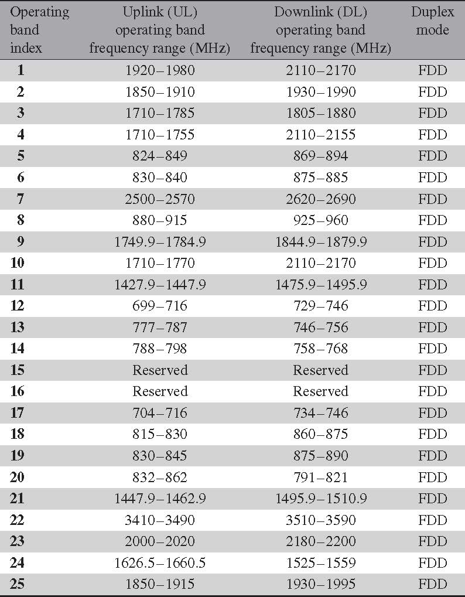
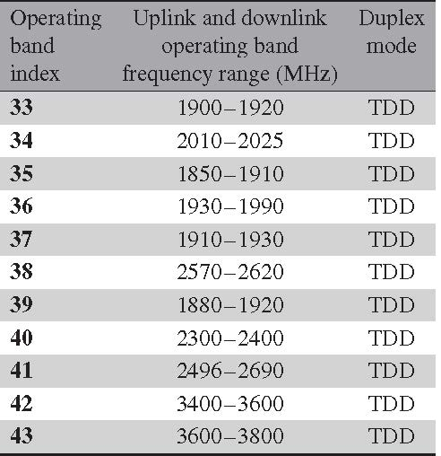
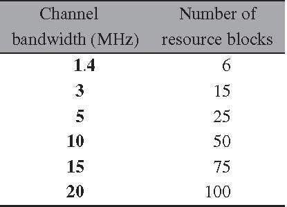
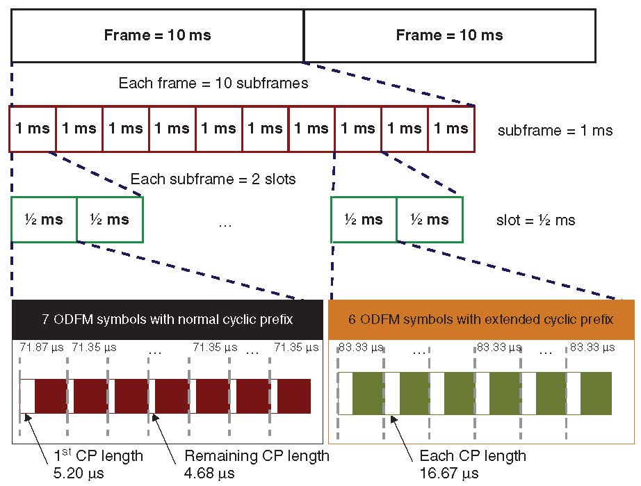
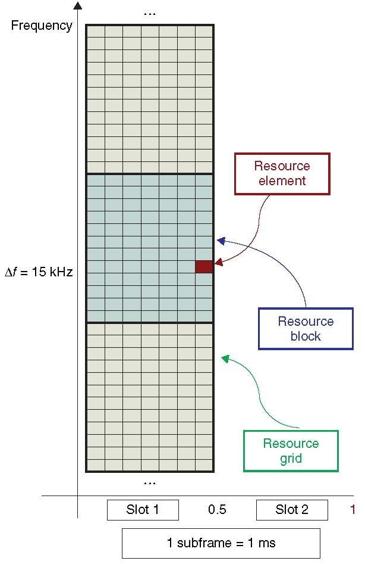

LTE 物理层技术概要
本文总结LTE系统的无线接入技术尤其是其物理层的一些核心技术。正是在其空口（Air Interface）中采用了这些核心技术，LTE系统才有相对于之前无线通信协议的巨大飞跃。围绕这些技术，我们逐步讨论LTE系统的优缺点。本文中涉及的几个主题包括：1）LTE所使用的无线频谱，2）TDD和FDD双工模式，3）带宽分配，4）帧格式，5）LTE的时频资源表示，6）LTE的上下行数据处理过程，7）自适应编码调制。总之内容比较广泛，并不会在某一个主题上逗留过多篇幅。但是，感谢知识电子化带来的便利：在每一个主题上都实时的加入了更深入的链接跳转，读者完全可以根据自己的兴趣选择是否调到自己想要了解的主题（感谢万能的Internet）。
光说不练那是假把式，配合本文提供的框架式的描述以及所给链接的帮助，我们完全可以使用Matlab仿真LTE系统的物理层。事实上，我在另外的文章中描述了LTE物理层信号处理过程的Matlab仿真。
1 空口（Air Interface）
如果妇孺皆知有点过分的话，用众所周知就差不多：LTE系统的下行链路空口基于OFDM技术，上行链路空口基于SC-OFDM技术。无论是上行还是下行都与OFDM紧密相关。采用OFDM技术的最重要的优点有：1）有效的对抗多径效应引起的码间干扰，2）允许相邻子载波之间有一半重叠（大大提高了频谱效率），3）使用FFT技术快速实现，4）OFDM技术天然与MIMO技术完美的结合，5）把宽带转换成多个窄带从而避免频率选择性衰落，6）灵活的资源分配。正是这些优点让OFDM技术成了LTE系统的十全大补丸。
由于采用了OFDM技术，LTE系统不仅可以灵活的分配时频资源还可以方便的支持多种物理带宽。在LTE系统中，频谱资源的划分与使用非常的灵活，这要归功于OFDM技术和MIMO技术的默契配合。另外，为了降低延迟，LTE系统的帧长为10ms，较短的帧长使得信道估计以及终端与基站之间反馈变得更加可靠，值得一提的是在下一代移动通信系统中，即即将到来的5G帧长会进一步被缩短，有可能实现1ms短帧。
2 频谱资源
LTE协议为该系统指定了不同物理频带的可用频谱资源。LTE系统的一个特性就是与之前的无线系统兼容，所以3GPP之前为3G划分的频谱可以用于LTE系统中。当然，除了之前3GPP划分的3G频带，LTE系统额外指定了新的频谱资源。不同的国家为LTE划分的频带也不同，这样LTE系统支持所有的频带保证了一部手机走天下（当然，有些运营商会对手机添加软件锁或者电信设备制造商会故意阉割对某些频带的支持，这些都是出于利益考虑。技术上，支持LTE全频带的手机可以做到一机走天下）。
同之前的3GPP标准一样，LTE系统支持FDD和TDD双工传输模式。在FDD系统中，频谱是成对划分的，分别用于上行和下行数据传输。FDD的频谱就像双向车道一样，你来我往在不同的道路上，互不干扰。在TDD系统中，上下行传输在不同的时间使用相同的频谱。TDD的频谱就像有些地方的潮汐车道一样，你来我往在同一车道，但是不同的时间。比较而言，TDD双工模式更有利于零碎频谱的使用。毕竟，频谱资源是有限且不可再生的。所以向FDD那样划分成对频谱并不是那么容易。
3GPP的Release 11标准为LTE的FDD模式划分了25对频带，如下图所示：

Figure 1: Release 11 LTE FDD频带划分
3GPP的Release 11标准为LTE的TDD模式划分了11对频带，编号为33到43，如下图所示：

Figure 2: Release 11 LTE TDD频带划分
3 单播和多播
什么是单播？单播就是点对点，基站向单个用户发送数据，就像打电话这种服务，就是单播服务。什么是多播？多播就是点对多，基站向多个用户发送数据，就像电视台向多个用户发送电视节目。在LTE系统中，除了支持单播外，还支持多媒体广播多播服务（Multimedia Broadcast/Multicast Service, MBMS）。MBMS可以高速的广播/多播语音和视频服务。
MBMS基于多小区传输模式，有专用的传输和控制信道。我们称MBMS的网络叫做多媒体广播单频网络（Multimedia Broadcast Single-Frequency Network, MBSFN）。多媒体信号在MBSFN网络的多个小区内发送给用户。由于是多个小区广播相同的信号到终端，可以大大提高终端接收信号的SNR，同时可以大大提高多媒体信号的传输速率。单播网络和多播网络在数据传输的过程中采用风格迥异的控制信息，网络参数也不尽相同。当然，本文会更多的关注单播过程所采用的技术。
4 带宽划分
IMT-Advanced要求LTE标准必须能够灵活划分带宽。LTE标准规定了六种带宽：从1.4MHz到20MHz。下图给出了LTE标准规定的五种带宽模式。在LTE系统中带宽的分配是以RB为单位的，1个RB占用的带宽是180KHz，每个RB共有12个子载波，每个子载波宽度为15KHz。五种带宽模式的RB数从6到100不等，或许你会疑惑180K*6 =1.08MHz 不是1.4MHz，这是因为每一种带宽还需要和旁边的频带之间有保护带宽，从而避免干扰。从下图可以看出，3M-20M带宽系统的频谱利用率大约90%左右，而不是100%。1.4MHz带宽的频谱利用率仅仅有77%左右。

Figure 3: LTE标准规定的5中带宽模式
5 时域帧格式
LTE的时域帧格式如下图所示。要理解LTE，首先要理解LTE信号的时频表示。在时域，LTE的发射信号以10ms一帧的方式向外发射。每个帧又被分为10个1ms的子帧。每一个子帧包括两个0.5ms的时隙。每个时隙包含六到七个OFDM符号。一个时隙中到底是六个还是七个OFDM符号依赖于循环前缀的长度。

Figure 4: LTE 时间帧格式
接下来，讨论LTE空口信号的时频表示。
6 信号的时频表示
LTE空口的一个显著特征是其信号的时频映射。原始信息比特经过编码与调制，映射为复数信号，最终按照一定的规则映射到时频资源栅格上。LTE系统系统的时频资源栅格如下图所示。

Figure 5: LTE 时频资源栅格图
LTE的时频资源栅格图横轴表示时域OFDM符号，纵轴表示频域OFDM子载波。上图给出的是正常循环前缀（normal cyclic prefix，记得么还有扩展循环前缀）的时频资源栅格图：每个时隙有7个OFDM符号。每一个Resource Block(RB)在频域上是180KHz，在时域上是0.5ms。所以一个RB包含的RE数量是12*7=84。在包含扩展循环前缀的时频资源栅格图中，一个时隙有6个OFDM符号。因此，一个RB包含的RE数量是72。RB的单位非常重要，因为它是资源调度的最小单元。
我们之前提到过，LTE系统中允许调度的RB数量从6到100不等，带宽从1.4MHz到20MHz。在上行和下行传输链路上，RB的概念几乎是一样的，唯一的区别在于中心频率的位置。在上行链路中，中心频率位于两个子载波之间，所有的子载波都用于数据传输；在下行链路中，零频周围的15KHz（一个子载波的宽度）不用于数据传输。
7 OFDM 多载波传输
在LTE标准中，上下行传输都是基于OFDM来完成的。通过OFDM技术，宽带信号由多个窄带信号完成。我们称每个窄带为一个子载波。生成OFDM符号时，首先映射复数符号到每个子载波上。这些子载波沿着时频资源栅格图的频率轴（也就是纵轴）分布开来。假设每个子载波上的符号为\(a_{k}\)，则每个子载波上映射的符号为\(a_{k}\)。假设带宽内有\(N\)个子载波，子载波间隔为\(\Delta f\)，则带宽可以表示为：
\begin{equation} \label{eq:1} BW = N\Delta f \end{equation}每一个子载波的位置都可以看做子载波间隔 \(\Delta f\)的整数倍，即
\begin{equation} \label{eq:2} f_{k} = k \Delta f \end{equation}OFDM调制器内涵\(N\)个复数信号调制器，每一个调制器对应一个子载波，具体实现过程为：
\begin{equation} \label{eq:3} x(t) = \sum_{k = 1}^{N} a_{k} e^{j2\pi f_{k} t} = \sum_{k = 1}^{N} a_{k} e^{j2\pi k\Delta f t} \end{equation}假设信道采样率为\(F_{s}\)，则信道采样间隔为\(T_{s} = 1/F_{s}\)，则发射信号的离散表示为：
\begin{equation} \label{eq:4} x(n) = \sum_{k = 1}^{N} a_{k} e^{j2\pi f_{k} n/N} \end{equation}其中\(N\)为采样点数，也是OFDM调制过程中IFFT的点数。
7.1 循环前缀
在基于OFDM技术的通信系统中，循环前缀的添加时非常重要的。其作用在于：1） 消除多径信道的影响，2）保证OFDM信号子载波之间的正交性。
我们知道在无线信道环境中，无线信号通过多条路径或反射，或折射，或衍射到达接收端。并不熟所有的路径都一样长，因此信号到达的时间也有早有晚。考虑到无线信道环境的多样性，实际系统中的传输路径是千差万别的。如果真有两路信号同时出发同时到达，这两路信号也真是够有缘分的。大多数信号都是有缘无分：同时从发射机出发，却无法同时到达接收机。之所以同一个信号却在不同时刻到达，就是因为无线信道传输环境的多样性造成信号经历了不同的路径，这就是多径。
无线通信之所以如此迷人就是因为有信道多样新的存在。曾经有一段时间，人们认为多径效应是不好的，它会增加接收机接收信号的难度，但是三十年河东三十年河西，三十年还不到人们就发现在MIMO系统中，多径效应反倒是一件好事。通过引入多天线，把原来的单输入单输出系统（Single Input Single Output, SISO）系统转换为多输入多输出系统（Multiple Input Multiple Output, MIMO）系统，多径效应反而带来系统容量的提升。关于MIMO系统是如何利用信道的多径效应，会在另外的文章中展开。
现在让我们回到循环前缀。循环前缀是多载波系统的重要参数。首先循环前缀的长度必须比多径信道的最长时延扩展长才能避免符号间干扰。其次，在一个OFDM符号前添加循环前缀会造成传输资源的浪费，引入了系统冗余。因此必须尽可能的缩短循环前缀的长度，并且保证没有符号间干扰。为此，LTE针对不同的业务场景规定了两种不同的循环前缀，如下表所示：
| 循环前缀 | 子载波间隔（kHz） | 每个RB子载波数 | 每个RBOFDM符号数 |
|---|---|---|---|
| 正常循环前缀 | 15 | 12 | 7 |
| 扩展循环前缀 | 15 | 12 | 6 |
| 扩展循环前缀 | 7.5 | 24 | 3 |